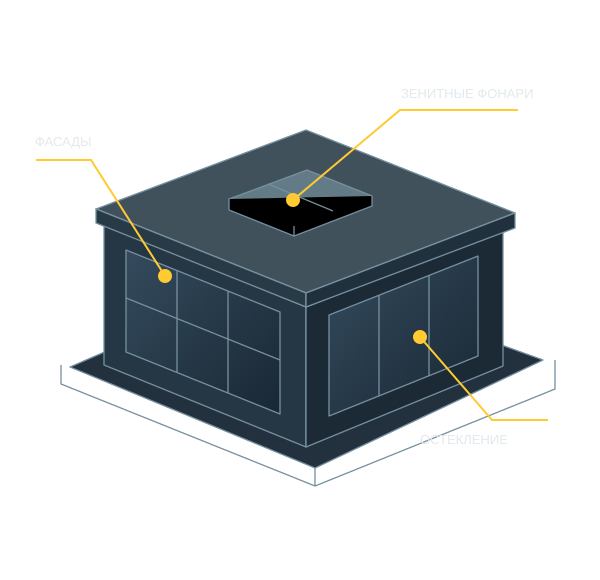
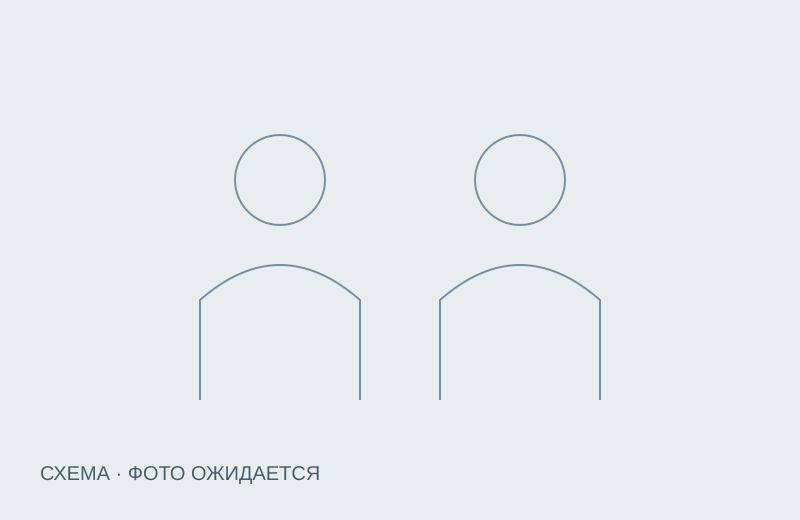

Ремонт зенитных фонарей
Протечки в районе фонаря?
Изучаем состояние фонаря и определяем, какие узлы требуют ремонта или замены.
Подробнее об услугеИнженерное восстановление зданий
Инженерный ремонт и восстановление фасадов, остекления, металлических конструкций и натурального камня.
Работаем с частными и коммерческими объектами, в том числе построенными другими подрядчиками.
Возможность восстановления определяем после диагностики.

Наши компетенции
От отдельной детали до узла конструкции. Начинаем с изучения причины повреждения.
Протечки в районе фонаря?
Изучаем состояние фонаря и определяем, какие узлы требуют ремонта или замены.
Подробнее об услугеТрещины или повреждение стекла?
Уточняем параметры заполнения и возможность замены стеклопакета с сохранением системы.
Подробнее об услуге
Механизм работает нестабильно?
Проверяем совместимость фурнитуры и подбираем решение для конкретной двери.
Подробнее об услугеОграждение расшаталось?
Определяем состояние заполнения, креплений и основания, затем согласуем состав ремонта.
Подробнее об услугеДеформированы крышки?
Оцениваем элементы и узлы; определяем объём ремонта и необходимость изготовления деталей.
Подробнее об услуге
Сколы на поверхности камня?
Изучаем материал и повреждения, оцениваем возможность восстановления существующей отделки.
Подробнее об услугеКамень намокает под осадками?
Оцениваем основание и возможность обработки, подбираем совместимое решение.
Подробнее об услугеСохранить то, что работает
Ремонт может сохранить оригинальную архитектуру, сократить демонтаж и затраты, уменьшить вмешательство в эксплуатацию и продлить срок службы исправных элементов. Применимость решения зависит от диагностики.
Рассматривается, если конструкция непригодна к дальнейшему использованию или восстановление нецелесообразно.
Рассматривается, если исправную часть конструкции можно сохранить.
До и после


Демонстрационный placeholder. Схемы показывают работу сравнения, а не результат реального ремонта. Ползунок поддерживает касание и клавиши со стрелками.
Демонстрационный пример, не реализованный объект.
О компании
Опыт фасадных работ и собственная металлообработка помогают разбираться в устройстве конструкции и выбирать обоснованное решение.
AVF Group работает с архитектурными конструкциями: проектированием, производством и монтажом. Для ремонтных задач используем собственные бригады и производственную базу в Твери и Туле.
Рассматриваем изготовление нестандартных элементов по задаче и работаем с объектами других подрядчиков. Возможности конкретного производства и состав специалистов уточняются под проект.
Количественные показатели будут добавлены после подтверждения.


Для кого мы работаем
Владельцам загородных домов, премиальной недвижимости и объектов со сложной архитектурой.
Сохранение архитектуры, качества и комфорта проживания — ориентиры при выборе ремонтного решения.
Обсудить частный объектУправляющим компаниям, девелоперам, собственникам коммерческой недвижимости, архитектурным бюро и эксплуатирующим организациям.
Согласуем технические решения и порядок работ с учётом эксплуатации объекта.
Обсудить коммерческий объектКак мы работаем
Покажите общий вид конструкции и проблемный участок. Укажите расположение объекта.
Уточняем задачу и исходные данные. Фотографии помогают определить дальнейшие действия, но не заменяют диагностику.
Согласуем необходимость выезда. Для определения окончательной стоимости требуется осмотр объекта.
Определяем состав работ и готовим техническое решение и коммерческое предложение.
После согласования выполняем работы и передаём результат заказчику. Условия приёмки фиксируются в договоре.
Проекты
Материалы из архива компании. Детали кейсов и фотографии готовим к согласованию.
Показано: 6 из 6
Частный объект · Переделкино
В архиве представлены материалы по гидрофобизации натурального камня.
Камень и фасадыПосмотреть проектФОК Некрасовка
Материалы по зенитным фонарям спортивного объекта.
ОстеклениеПосмотреть проектСпортивный объект · Самбо / Бокс
Замена дверной фурнитуры на спортивном объекте.
Дверная фурнитураПосмотреть проектОбъект «Успенская Л.»
Материалы по металлическим ограждениям; состав работ уточняется.
ОгражденияПосмотреть проектЧастный дом · Переделкино
Металлические элементы на частном доме. Детали работ уточняются.
МеталлоконструкцииПосмотреть проектСберСити
Материалы из архива компании по флюгаркам.
МеталлоконструкцииПосмотреть проектПеред обращением
Да, рассматриваем объекты, построенные и смонтированные другими подрядчиками. Возможность работ с конкретной системой определяем после изучения её состояния и устройства.
Это зависит от повреждений и состояния системы. После осмотра определяем, какие элементы можно сохранить, а какие необходимо заменить. Возможность восстановления заранее не гарантируем.
Фотографии помогут понять проблему и уточнить исходные данные. Окончательный состав работ и стоимость определяем после осмотра.
Первое обсуждение можно начать по фотографиям. Необходимость и условия выезда согласуем по задаче; окончательная стоимость определяется после осмотра. Стоимость самого выезда требует согласования.
Режим работ зависит от доступа к конструкциям и требований безопасности. Возможность работ при продолжающейся эксплуатации нужно согласовать для конкретного объекта.
После осмотра согласуем состав работ и готовим коммерческое предложение. Стоимость зависит от состояния конструкции и объёма ремонта; фиксированного прайса на сайте нет.
Условия и сроки гарантии требуют подтверждения компанией и будут указаны в договоре. До согласования конкретных условий сайт не содержит гарантийных обещаний.
Москва и Московская область, Калужская область, Тульская область, Тверская область, Владимирская область, Рязанская область.
Обсудим задачу
Покажите нам проблему. Специалист изучит фотографии и предложит дальнейшие действия.
Демонстрационный режим: данные и фотографии остаются в браузере, заявка не отправляется.
Мессенджер: контакт уточняется